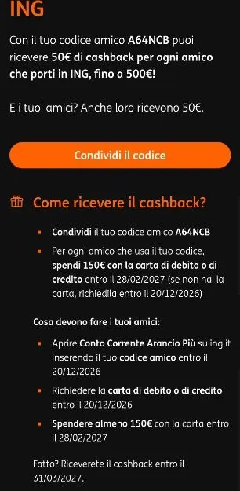
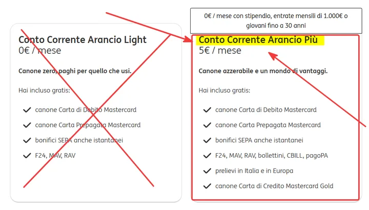
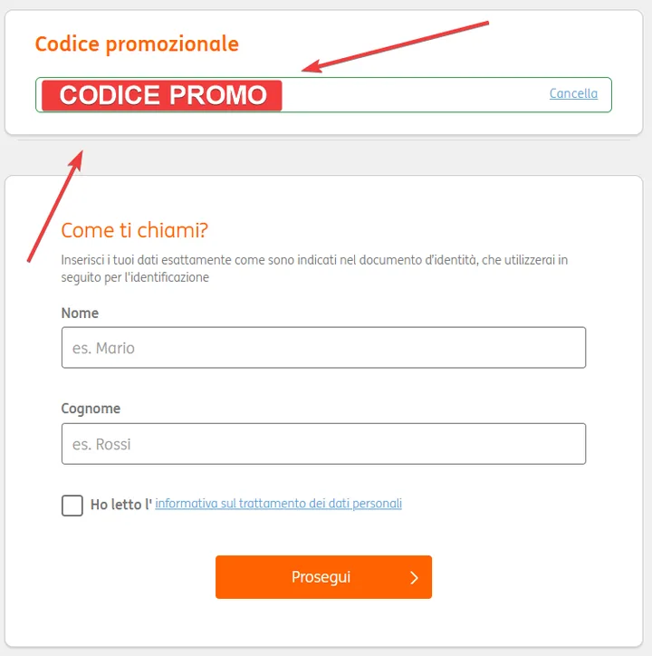
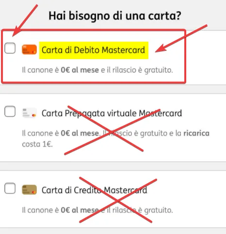

ING Conto Corrente Arancio
50€ di cashback se apri il Conto Corrente Arancio Più con un codice amico entro il 20 dicembre 2026 e spendi almeno 150€ con le carte ING entro il 28 febbraio 2027.
Passaggi
- 1
Tieni pronto il codice amico
È nel riquadro giallo «Codice invito» di questa pagina: copialo. Si inserisce solo durante l'apertura online, dopo non si può più aggiungere.

- 2
Apri il Conto Corrente Arancio Più
Vai su ing.it oppure nell'app ING Italia e scegli il Conto Corrente Arancio Più. Non il Conto Corrente Arancio Light: con quello il bonus non vale. Se vuoi anche il 4% descritto sotto, spunta «Voglio aggiungere Conto Arancio».

- 3
Scrivi il codice amico
Quando il modulo chiede il Codice Amico, scrivilo e controlla che sia giusto prima di andare avanti.

- 4
Verifica la tua identità
Crea il PIN a 6 cifre, inserisci i dati e scansiona fronte e retro di documento e tessera sanitaria. Puoi confermare anche con lo SPID.
- 5
Chiedi la carta entro il 20 dicembre
Durante l'apertura richiedi la carta di debito Mastercard ING: la carta fisica arriva a casa. Completa apertura e richiesta della carta entro il 20 dicembre 2026.

- 6
Versa i soldi con un bonifico
Fai un bonifico da un altro conto intestato a te: l'IBAN del nuovo conto è nella home dell'app ING. Versa 150€, oppure meno e ricarica più volte man mano che spendi.
- 7
Spendi almeno 150€ con la carta
Paga con la carta ING, online o in negozio, fino ad arrivare a 150€ in totale entro il 28 febbraio 2027. Anche tanti acquisti piccoli vanno bene. I prelievi al bancomat non contano.
Per spendere poco
- Per arrivare a 150€ senza perderli usa il giro Aircash: compri voucher ABON con la carta ING, li carichi su Aircash e riporti i soldi con la carta virtuale Aircash, gratis. Con il bonifico da Aircash perdi circa 1,50€.
- Bastano 50€ alla volta: compri un voucher, lo carichi, riporti i soldi su ING e ripeti tre volte.
- Compra i voucher in un negozio o su Woolsocks: ING non conta i pagamenti a banche o società finanziarie, quindi non ricaricare Aircash direttamente con la carta.
- In alternativa spendi i 150€ in ricariche Amazon, ricariche del telefono o carte regalo che userai.
Il giro Aircash, per le spese alte
- Apri il conto nell'app Aircash. Scarica l'app dal link di invito
- Compra i voucher ABON, da 10€ a 50€ l'uno, pagando con la carta del bonus. Online li trovi su Woolsocks, gratis e con l'1% di cashback, o su Best Shopping, dove il nome sul voucher deve essere uguale a quello del conto Aircash. Li vendono anche alcune tabaccherie, supermercati e negozi di elettronica.
- In Aircash tocca Versamento › Contanti ABON › Inserisci il codice manualmente e scrivi il PIN a 16 cifre. Carica ogni voucher appena lo compri.
- Riporta i soldi gratis: nell'app tocca Aircash Mastercard › Aggiungi carta › Virtuale (la carta virtuale non costa nulla), aggiungila ad Apple Pay o Google Pay e usala per ricaricare un altro tuo conto che accetta ricariche con carta, per esempio Revolut. Aircash non fa pagare i pagamenti con la sua carta.
- Se preferisci il bonifico verso il tuo IBAN, paghi l'1% fino al 31 dicembre 2026 (su 50€ te ne tornano 49,50€), poi il 2%. Arriva in un giorno lavorativo.
- Ripeti fino alla spesa richiesta: con 50€ sul conto bastano più giri.


Non ricaricare Aircash direttamente con la carta del bonus: molte banche non contano i pagamenti verso società finanziarie. Compra i voucher in un negozio o su un sito. Commissioni ufficiali di Aircash
Ricarica Amazon o del telefono
- Con la carta nuova ricarica il saldo del tuo account Amazon o la tua SIM per l'importo che serve: spendi soldi che userai dopo. Il taglio minimo è di 5€.
Carte regalo che userai comunque
- Compra con la carta nuova una carta regalo per la benzina, il supermercato o un negozio dove fai già acquisti, per esempio su MyGiftCard.
- 8
Aspetta il cashback
I 50€ arrivano sul Conto Corrente Arancio Più entro il 31 marzo 2027. Non serve chiederli.
Bonus in più
- Con il Conto Arancio, il conto deposito di ING, c'è il 4% lordo annuo per 12 mesi se apri entro il 20 dicembre 2026 e accrediti uno stipendio di almeno 1.000€ entro il 28 febbraio 2027.
Dove si sbaglia
- Il codice amico va inserito durante l'apertura online: dopo non si può aggiungere.
- Valgono le spese con la carta di debito Mastercard e con la carta di credito Mastercard Gold di ING. Prelievi, operazioni non riuscite o annullate e alcune categorie di esercenti indicate nel regolamento non contano.
- Il canone è 0€ fino a 30 anni. Dopo costa 5€ al mese, che scendono a 0€ con stipendio, pensione o entrate di almeno 1.000€ al mese.
- Con un conto cointestato il cashback da 50€ è uno solo.
Controllato il 23 nov 2026 sul sito ufficiale.